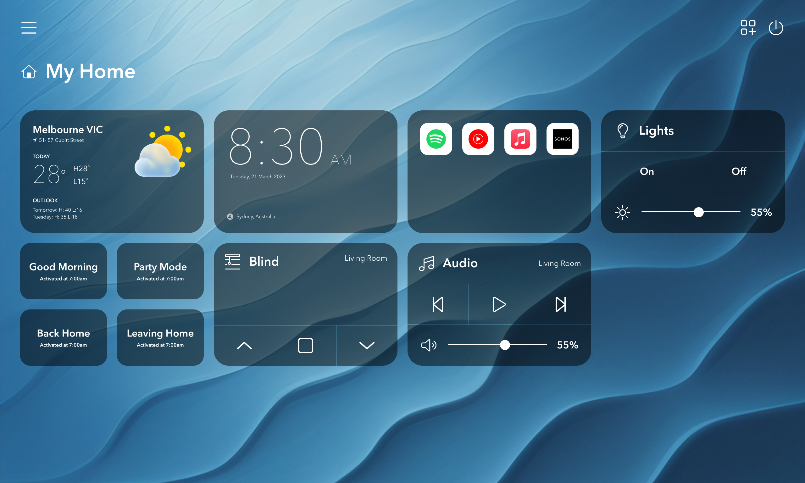
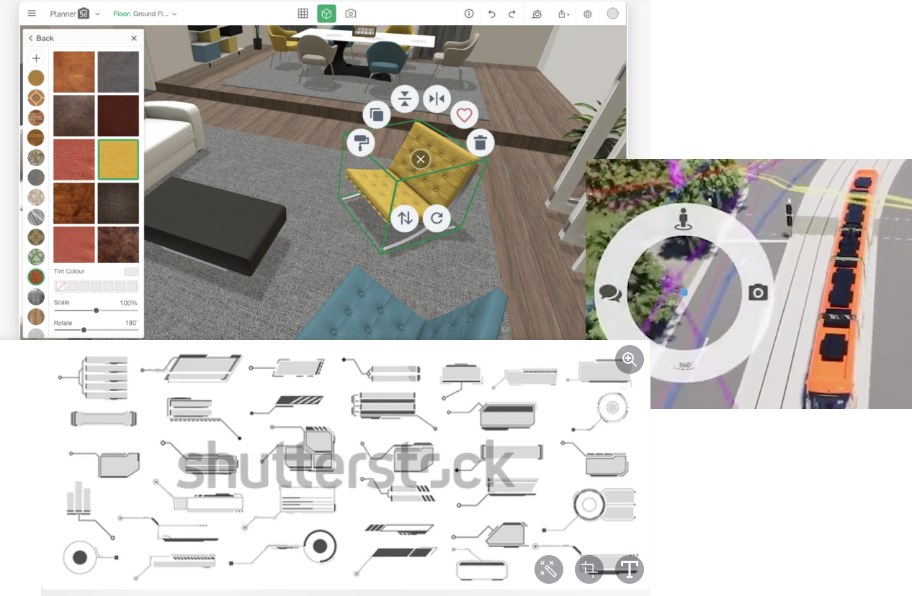
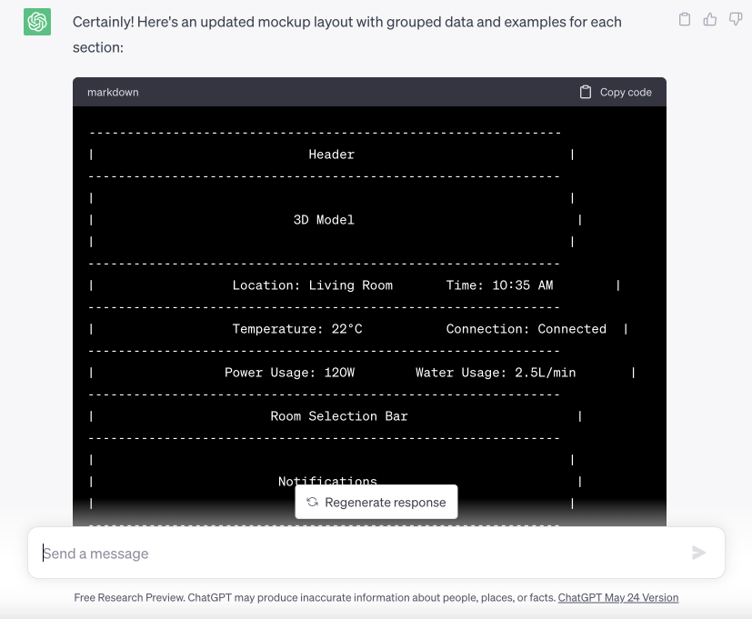
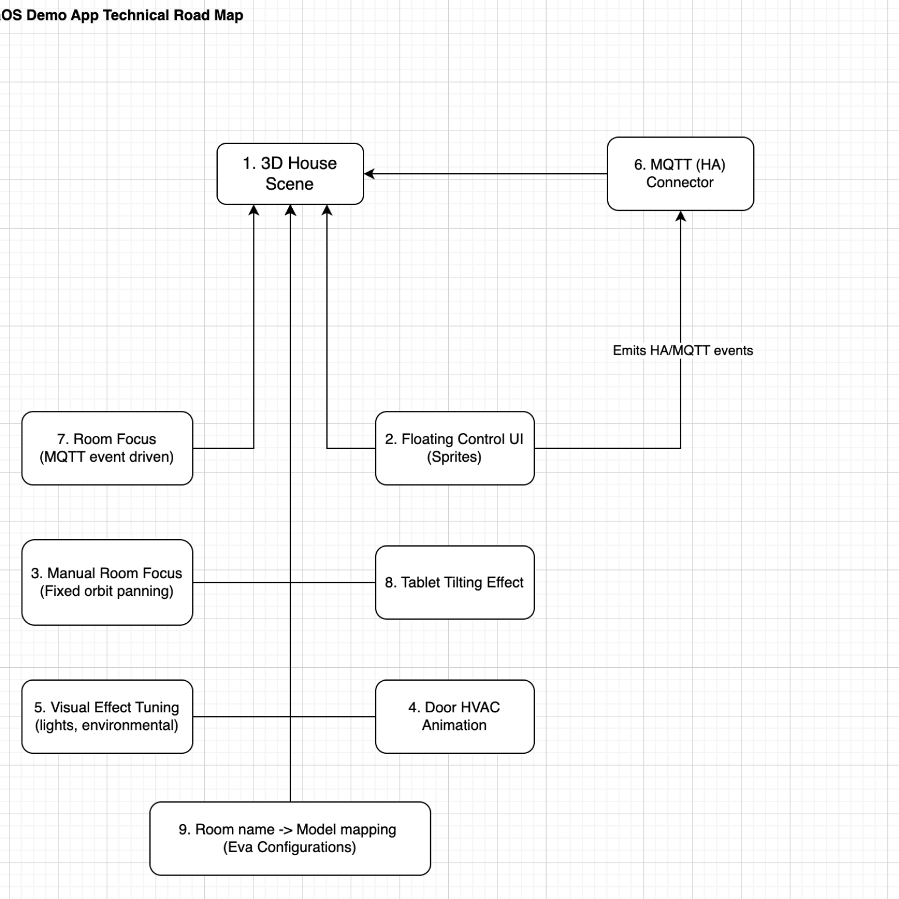
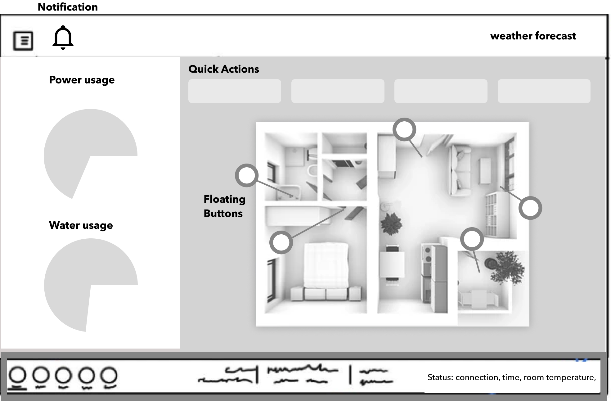
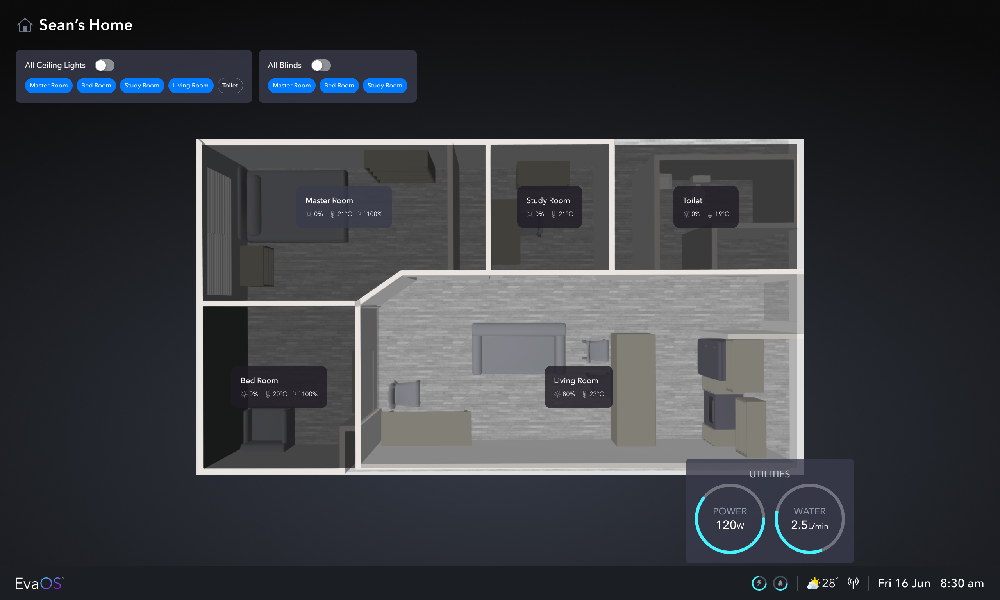
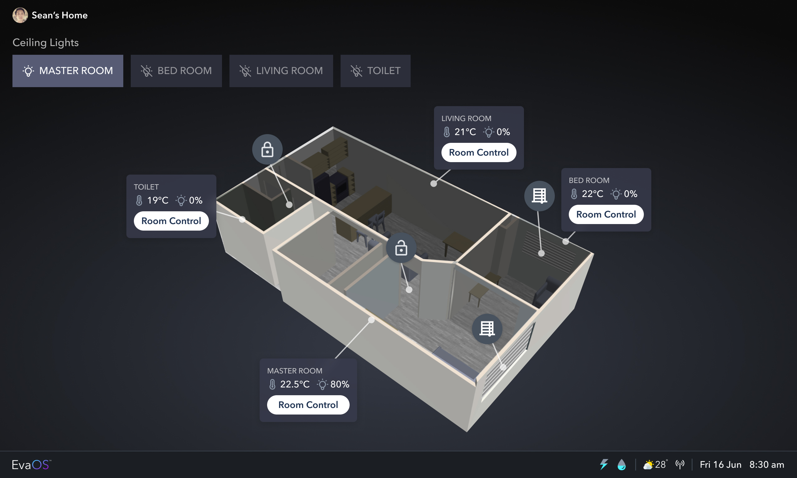
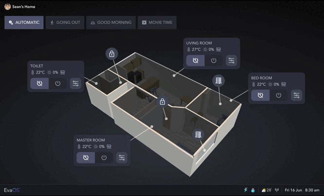

The design challenge for EvaOS was to create a tablet application for controlling Eva Smart Home that goes beyond the usual button-based interfaces. The team aimed to introduce a "wow" factor and elevate the user experience. To tackle this challenge, I collaborated with a developer to design and prototype a 3D user interface. This innovative approach minimized the reliance on textual elements and instead focused on intuitive controls for users to navigate and control different rooms in Eva. The goal was to provide users with a futuristic lifestyle experience, where they feel seamlessly connected to and in control of their smart home environment
Figure 1. Current button-based EvaOS user interface
During the development phase of 3D Eva, I took on the task of researching inspirations for 3D user interfaces that would be relevant to a home control system. I explored various sources to gather insights and ideas that could be applied to the project. Additionally, I leveraged ChatGPT to assist in generating a basic layout for the application. This collaborative effort allowed us to combine research-driven design principles with innovative technology, ensuring that the final design of EvaOS would be both visually captivating and functionally intuitive for users.
Figure 2. 3D UI ideas
Figure 3. Mockup layout created by ChatGPT
The developer created a technical drawing that served as a roadmap for describing the prototype functionalities of 3D Eva. This drawing outlined the various features and interactions that would be incorporated into the prototype, providing a clear vision of how users would navigate and interact with the application. The technical drawing served as a valuable reference for both the design and development teams, ensuring alignment and understanding of the intended functionalities throughout the implementation process.
Figure 4. Technical roadmap drawn by the developer
After conducting thorough research and reviewing the technical roadmap, the developer and I met to discuss the design direction for 3D Eva. Building upon the ideas generated from our research, we collaboratively suggested the layout and interactions we aimed to achieve in the prototype. Through open and constructive discussions, we reached a consensus on the design direction.
To quickly visualize our ideas, we created low-fidelity prototypes. These prototypes provided a basic representation of the proposed layout and interactions, allowing us to assess the feasibility and effectiveness of our design choices. This iterative process of visualizing and refining the low-fidelity prototypes helped us solidify our design decisions before moving forward with high-fidelity design implementation.
Figure 5. Low-fidelity prototype of EvaOS
In the initial high-fidelity (hi-fi) design, I adopted a bird's eye view of the 3D model and decided to hide the floating buttons to avoid visual clutter caused by including all controls as floating buttons. The bird's eye view was chosen to provide users with a better understanding of the visual changes in Eva as they interacted with it.
At the top of the user interface, quick controls for multiple rooms were implemented. Users could simply select tabs to easily toggle the controls for different rooms on and off. This simplified approach enabled users to conveniently manage multiple rooms simultaneously with ease and efficiency.
I incorporated a status bar at the footer of the interface. This status bar displayed important information such as the current time, temperature, and connectivity status with the Eva building. Additionally, the power and water usage details would pop up when tapped, providing users with instant access to relevant consumption information.
Figure 6. High-fidelity version 1 of EvaOS
In version 2 of EvaOS's high-fidelity design, I made improvements based on valuable feedback. One significant change was the transformation of the 3D model from a bird's eye view to an isometric view. This modification aimed to make the user interface more visually interesting and bring a wow factor to the EvaOS experience.
I addressed the feedback regarding the confusing quick control setup in version 1. To provide a more intuitive and aligned user experience with industrial UI design, I replaced the quick control cards at the top with bold buttons.
Each bold button represents a specific room and allows users to easily turn the lights on or off for that room. By simplifying the controls and eliminating the ambiguity of tabs being mistaken for buttons, the new design enhances usability and clarity. This adjustment aligns EvaOS with the desired industrial UI aesthetic, such as the Dragon Capsule from SpaceX, and ensures a more seamless and intuitive user experience.
I streamlined the interface by using a minimal number of floating buttons for doors and blinds. Recognizing that these controls do not often require frequent adjustment, I chose to represent them with icon-only buttons.
Each room card displays temperature and light status, while a Room Control button triggers a side panel for advanced settings. To enhance the user experience and provide a more immersive feel, the 3D model dynamically adjusts to show a focused view of the room being controlled. This visual feedback helps users establish a stronger connection with the space they are managing, improving their overall interaction and control experience within EvaOS.
Furthermore, I adjusted the size of fonts and icons to ensure optimal usability on the 11-inch tablet, the target device for EvaOS, providing users with a seamless and comfortable user experience.
Figure 7. High-fidelity version 2 of EvaOS
In the final version of EvaOS's high-fidelity design, I made further modifications to enhance the user experience. One significant change was transforming the quick controls into a mode switcher, allowing users to quickly change Eva's settings based on different occasions. The Automatic mode follows preset routines that adjust the settings according to the time of day, providing convenience and automation.
To enhance usability, power buttons have been added to each room card, enabling users to easily turn on or off all controls for a specific room with a single click. This update creates a more immersive experience by placing room-specific controls closer to each room, rather than at the top of the UI.
Additionally, the room cards now display the air conditioner status, including the fan speed, allowing users to effortlessly monitor and adjust the airflow for optimal comfort. The room control button has been replaced with an intuitive icon button, streamlining the interface and providing quick access to advanced settings for each room. These changes significantly improve the user experience, making it effortless for users to manage their preferred settings and create a comfortable living environment. Here is the prototype link for the final version of EvaOS that you can interact with.
Figure 8. Interactions of the final version of EvaOS
In conclusion, the EvaOS project presented exciting design challenges and opportunities for creating an innovative and user-friendly control system for Eva Smart Home. By incorporating 3D user interfaces, intuitive controls, and responsive feedback, we aimed to elevate the user experience and provide a futuristic lifestyle for users. This project served as a testament to the power of innovative design thinking and its ability to transform the way we interact with smart home technologies.